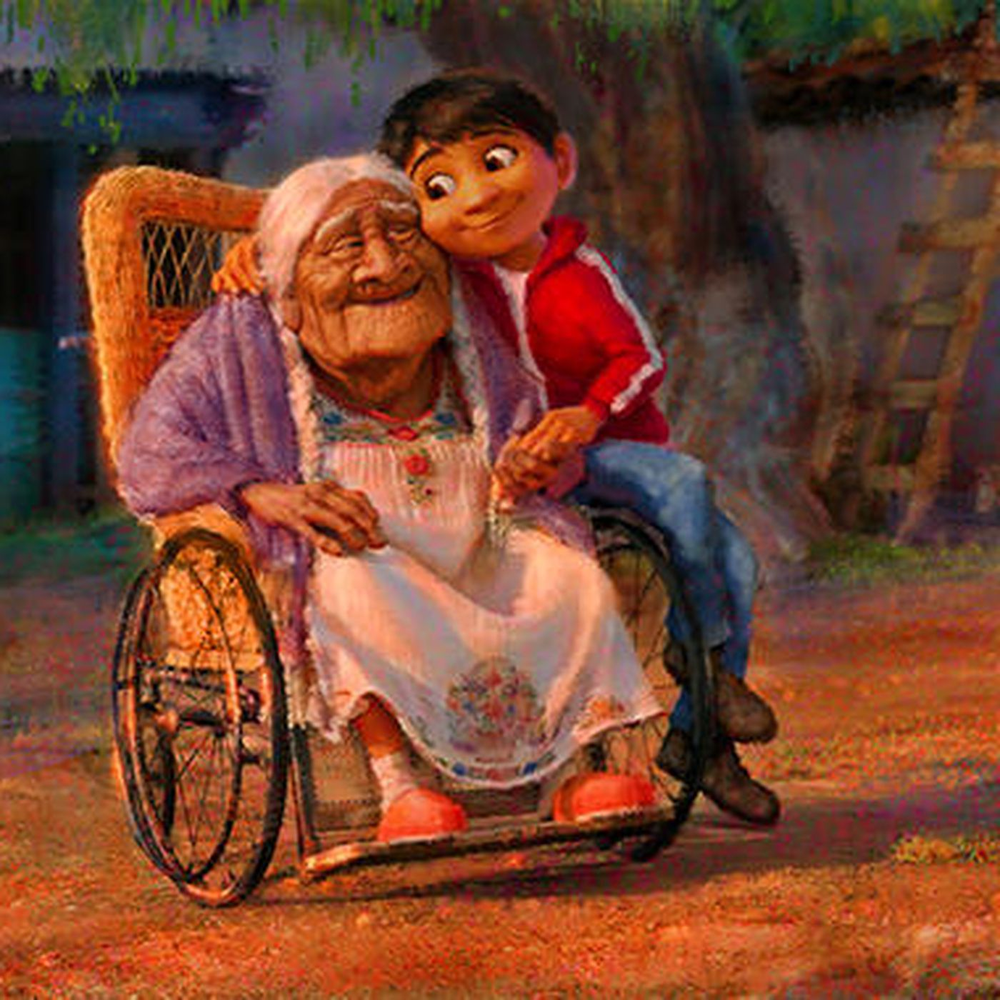
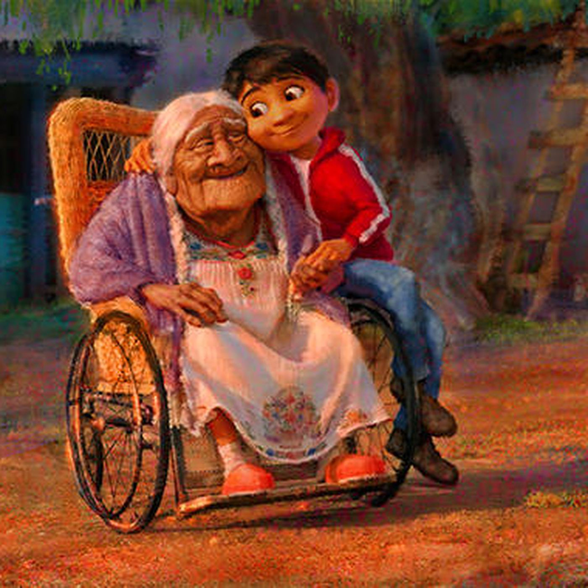
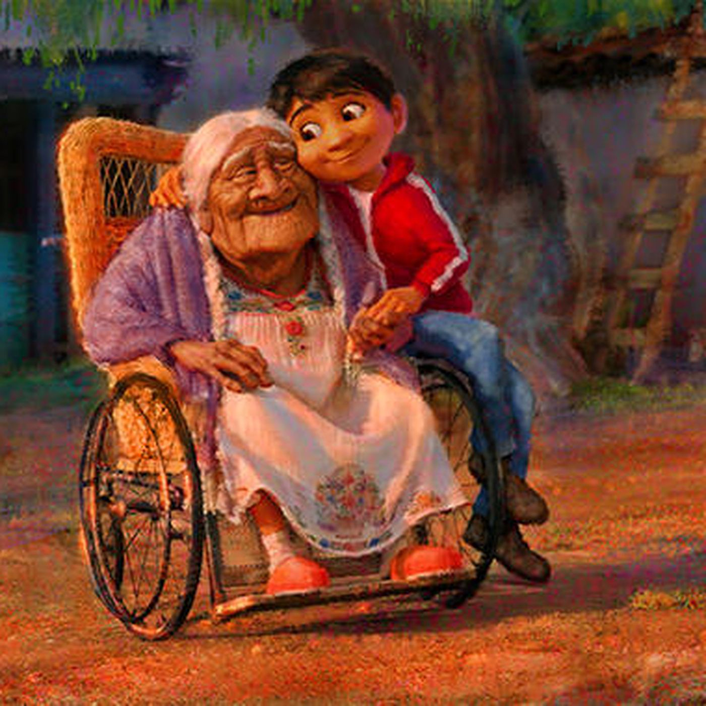

Juan Sainz
Approximately 9 years ago, I immigrated to the United state from Mexico. During my first year, was 1st grade, I struggled in classes because I couldn't speak the language nor understand what anyone was saying. It was difficult for me to write in English because my home language was Spanish but I managed to pass the subjects with at least a C or higher, the only class I had strength in was math because it only dealt with numbers. But, I never gave up and got better each year academically up to the point where I almost had straight A's, the only exception was English, this subject was really difficult for me.
At the beginning of middle school, I was fortunate enough to have a great English teacher who helped me to become a better writer and speaker. That was the first time I received an A in English which was very significant for me because it helped me realize that all the work I had put in class was worth it. That year I earned straight A's for the first time ever. In the next few years, I had my promotion from middle school and I had already accumulated straight A's all three years of middle school. I received the principal's list award, Avid- Certificate of Achievement, President's Education Award Program and Double-A Award. I felt achieved so did my parents, my main motivators. This was a very significant event in my life that made me realize that no matter what cultural barrier I was going to face I will never feel discouraged or believe that I am not good enough.
Each year the classes got harder and moving to high school was a bit of a challenge. But that did not stop me from getting good grades, I worked extra hard in my classes, did my work and even got involved in the school in general, which has helped me gain the knowledge that I have today from those classes. As a senior, I have strategies for learning and understanding the material, to become equipped for college.
I would like to attend college with the hopes of getting a good job that I could be passionate about. The career I have chosen is business administration and marketing. This career has gained my interest because, in the future, I hope to be able to create a business of my own. But for me to accomplish this goal, I need to be well educated and prepared. My personal goal that has been over the past school year is to get good grades and get involved in school extracurricular activities. Also, my school experience has influenced me to attend college. My AVID class specifically had impacted me to take a look at the variety of colleges and careers offered. This class and many other classes have helped me prepare to attend college by being more organized, being able to take better notes, and how to apply for any Financial aid and college applications. My school counselors have also prepared me for school by continually helping me out for my classes I have taken to meet my A-G requirements. Also, my family has motivated me to attend college because they are the reason why I am fortunate to be in this country and have a better future.
Have worked 3 jobs
Education
UC Riverside
Portfolio
 


